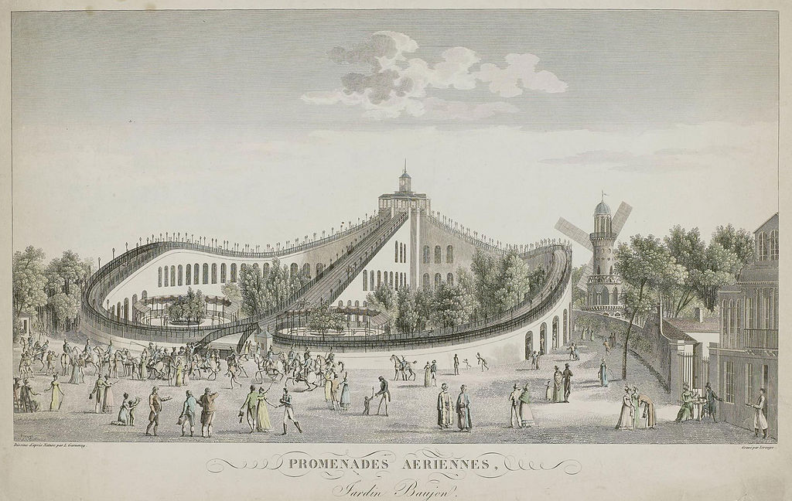
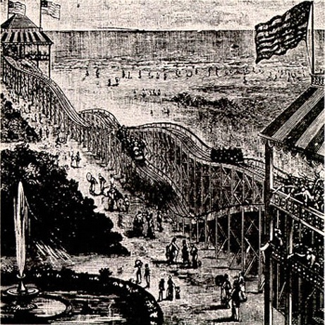
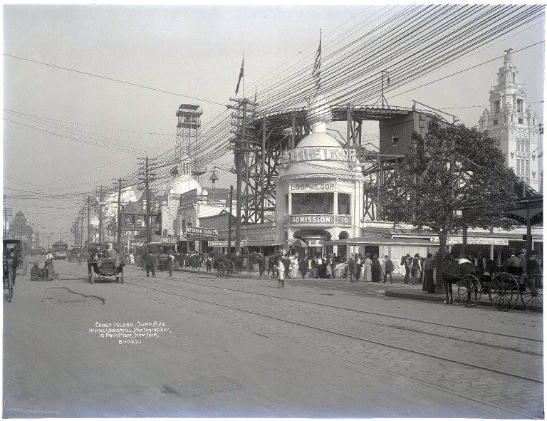
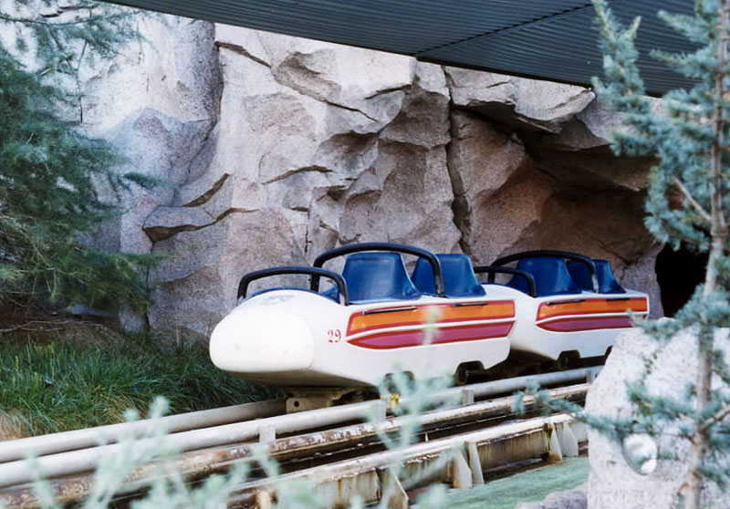

Tech: Now and Then

February 8th 2021.
An illustration of a Russian Mountain, the inspiration for the roller coasters we have now.
Roller coasters are one of the most fascinating examples of theme park rides. They're a giant wood/steel contraption that pulls around people for fun. How is that even fun? Well, it originally wasn't much. Though, how did we even think of such a huge thing?
The "Promenades-Aeriennes" in Paris, one of the first roller coasters.
It all started in Russia, where in Saint Petersburg they built giant mountains that were called "Russian Mountains". They were giant slides that were built on wood and ice, and were usually about 70-80 feet tall. Sleds were the usual mode of transport, but sometimes wheeled carts were used. This inspired some Russians, who were stationed in Paris in 1815-1816, to give French people the idea of sledding down hills on giant man-made slopes.
In 1817, Nicolas Beaujon (A french banker) built his own amusement park, the Parc Beaujon, with the most popular ride being the "Pormenades Aeriennes", or "Aerial Strolls". The ride had cars securely locked to the tracks that went around at decently fast speeds. The cars were towed to the top and released to the two tracks on either side of the tower. Soon enough, there was 7 similar rides in France. These rides were only temporary attractions, though.
Thompson's Switchback Railway, one of the first full-loop coasters.
The idea was slightly differently conceived in America, as it came from minecarts. In the 1850's, a mining company in Pennsylvania had the Mauch Chunk gravity railroad constructed to deliver coal to Mauch Chunk (now known as Jim Thorpe) from the coal mines. The workers found the cart ride exhilarating, and started to talk about it to locals. Soon enough, workers offered rides (for a small sum) to the general public to make some extra money. Railway companies started to support this, as it made them a decent amount of money. This idea then sparked an idea in a future themepark owner's head...
In 1884, LaMarcus Thompson worked on Switchback Railway, one of the first coasters, and opened it up in Brooklyn, NY. Passengers would hop in a car on the top of a platform and then go down a 600ft track, which would go up to another tower, then go back on the return trip. In 1885, the Pleasure Road coaster, created by Phillip Hinkle, was the first coaster to have an automatic lift hill. This coaster quickly became the most popular attraction in Coney Island. Then Thompson struck back again in 1886 with a patent for a roller coaster with dark tunnels and painted scenery. Roller coasters were starting to ramp up, and construction companies were more than happy to build them.
Loop the Loop, one of the first vertical looping roller coasters.
As coasters grew in popularity, the idea of riding coasters with more intense elements grew too. Lina Beecher started to mess around with the idea of a vertically looping coaster, which eventually developed into two rides: Flip Flap Railway, located in Brooklyn, and Loop the Loop, which was near Columbus, Ohio. These rides were incredibly dangerous, as they didn't know how to construct a loop properly without hurting riders, and as such, it gave many riders whiplash and injuries. These rides were dismantled until a better solution could come in mind. There was a better coaster being worked on though...
John Miller, knowing how rough coasters were, decided to work on a fix that would ultimately improve the entirety of roller coasters. He created the first "underfriction" roller coaster, which was wildly innovative. An "Underfriction" coaster is when a cart has multiple wheels beneath the cart that hook it onto the track. A video about what these look like and how they function is here. Unfortunately, due to the Great Depression kicking in right when the coaster started to get popular, many coasters weren't being constructed due to the major lack of money. Although, after the depression, coasters were brought up and innovated once more.
Disney's Matterhorn Bobsleds, the first coaster to use steel for its tracks.
Disneyland, in a stroke of genius, decided to use a tubular steel track instead of wood due to steel becoming much cheaper and easier to use in 1959. The ride was applauded for its smoothness on-ride, and it made people much more inspired to use steel in their coasters. Coaster designers soon enough realized that steel was much easier to construct with rather than wood, as steel could be bent into all sorts of inversions and twists without being extremely precise. Due to this discovery, Corkscrew opened in Knott's Berry Farm with the first inversions that felt comfortable due to the advancement of iron. Then, the vertical loop was brought back with the ride "Great American Revolution" in Magic Mountain, a park in Valencia, California.
In conclusion: it's pretty amazing how coasters have advanced. Most innovations nowadays are how tall the coaster can go and how long the coaster lasts. There's been no major changes in how coasters are created, so there's no other advancements, but it's still amazing how many coasters are being produced and how many can break records previously thought impossible.